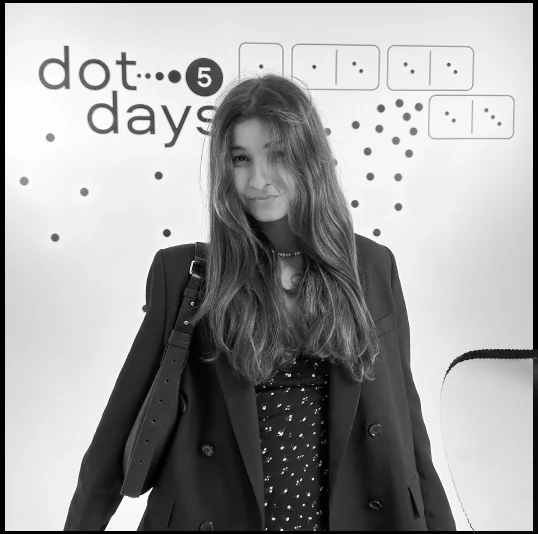

Rambler&Co СберСеллер
Продюсер спецпроектов: экосистемные интеграции, интерактивные лендинги, нестандартные рекламные форматы, DOOH, сервисные размещения и пресейлы.
Project Manager | Commercial & Video Projects
Продюсер и проектный менеджер коммерческих спецпроектов. Соединяю креатив, бизнес-задачи и production-процессы в проектах для медиа, брендов и цифровых экосистем.

Лидирование спецпроектов для Сбера, партнеров экосистемы и Rambler&Co.
Commercial cases
Короткая витрина проектов. Нажмите на карточку, чтобы открыть кейс и посмотреть проект в desktop/mobile режиме.
Experience
Я работала на стороне бренда, медиахолдинга, продакшна и рекламной экосистемы. Поэтому смотрю на проект сразу с четырех сторон: клиента, креатива, производства и площадки.
Продюсер спецпроектов: экосистемные интеграции, интерактивные лендинги, нестандартные рекламные форматы, DOOH, сервисные размещения и пресейлы.
Менеджер спецпроектов для Voice, The Symbol, Grazia, Robb Report, TechInsider, Men Today и «Нового Очага».
Маркетинг и рекламная поддержка 700+ магазинов, съемки, промо, медиапланы, подрядчики и бренд-материалы.
Ивенты до 4000 гостей, тендерные презентации, сметы, сценарии, подбор команд и проектная документация.